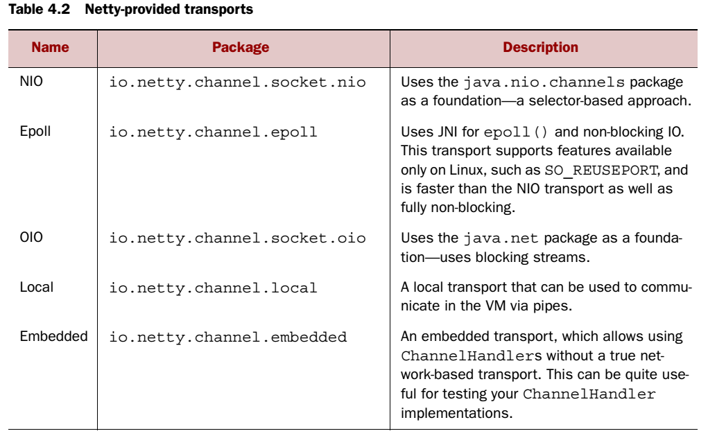
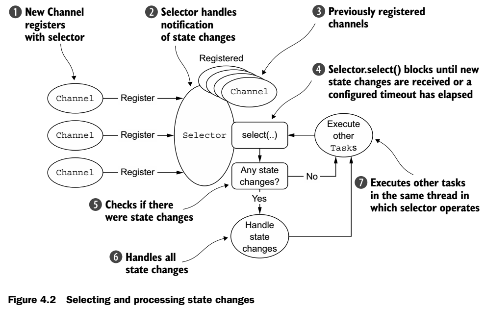
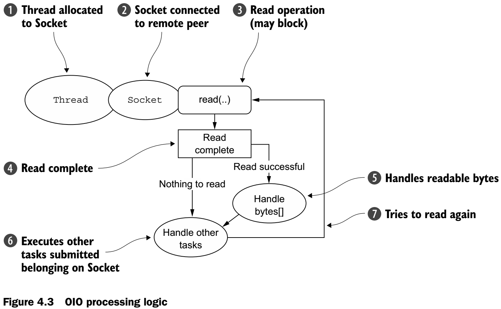

Chapter 4 - Transports
Netty OIO and NIO implementation has way less differences than Java's NIO and OIO, we only need to change the OIO eventLoopGroup to NIO eventLoopGroup, as well as oioSocketChannel to nioSocketChannel.
4.2 Transport API
A Channel has a ChannelPipeline and a ChannelConfig assigned to it.
Typical uses for ChannelHandlers include:
- Transforming data from one format to another
- Providing notification of exceptions
- Providing notification of a Channel becoming active or inactive
- Providing notification when a Channel is registered with or deregistered from an EventLoop
- Providing notification about user-defined events
Netty's Channel implementation is thread-safe.
4.3 Included Transports

4.3.1 NIO
It makes use of selector-based API, whose basic concept is to serve as a registry where you request to be notified when there is a state change of a Channel.
Selection operation bit-set
- OP_ACCEPT: when a new connection is accepted, and a Channel is created
- OP_CONNECT: when a connection is established
- OP_READ: when data is ready to be read from the Channel
- OP_WRITE: when it's possible to write more data to the Channel

Zero-copy
A feature only available for NIO and Epoll.
Allow you to quickly and efficiently move data from a file system to the network without copying from kernel space to user space, which significantly improves the performance.
4.3.2 Epoll
Epoll is now the standard for non-blocking networking on Linux.
To substitute epoll for NIO, replace NioEventLoopGroup with EpollEventLoopGroup and NioServerSocketChannel with EpollServerSocketChannel
4.3.3 OIO

Netty makes use of SO_TIMEOUT Socket flag, which specifies the maximum number of milliseconds to wait for an I/O operation to complete. If operation fails to complete within the time interval, it will throw an exception and continue the processing loop.
4.3.4 Local transport for communication within a JVM
In this transport, the SocketAddress associated with a server Channel isn't bound to a physical network address; rather, it's stored in a registry for as long as the server is running and is deregistered when the Channel is closed.
The client wishing to connect to the server running in the same JVM must implement the same transport.
4.3.5 Embedded Transport
Netty provides an additional transport to allow you to embed ChannelHandlers as helper classes inside other ChannelHandlers, so you can extend the functionality of a ChannelHandlers without modifying its internal code.
EmbeddedChannel is the key of embedded transport, it will be easy to help unit tests.
4.4 Transport use cases
| Transport | TCP | UDP | SCTP | UDT |
|---|---|---|---|---|
| NIO | X | X | X | X |
| Epoll | X | X | - | - |
| OIO | X | X | X | X |
| Application needs | Recommended transport |
|---|---|
| Non-blocking code base or general starting point | NIO |
| Blocing code base | OIO |
| Communication within the same JVM | Local |
| Testing ChannelHandler implementations | Embedded |